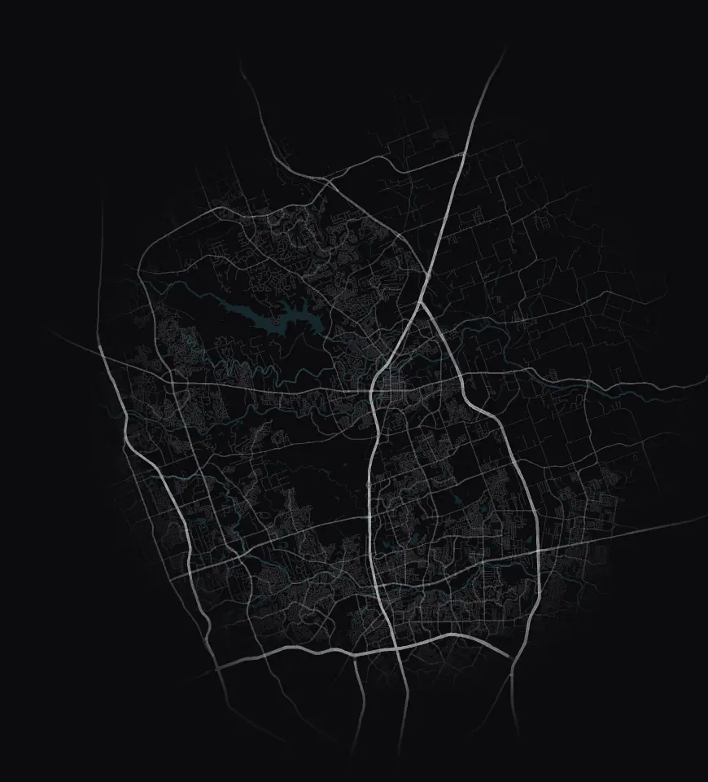

Sound familiar?
Your message is good. Families nearby haven't heard it yet.
"We tried Facebook ads and nobody came."
Families who see your ad need two more things: a page to plan a visit and a text from your church. We set up both.
"Nobody on staff has time."
Your staff is busy enough. We build your campaign and run it for you, and you approve each piece before it goes out.
"We can't tell if any of it works."
We count families: the ones who plan a visit and the ones your welcome team greets on Sunday.
"Families visit once and we never see them again."
We text each new family from a number in your church's name. Then we check in for six Sundays. See how we follow up.
Map data © OpenStreetMap contributors. Household estimate from US Census data.
Step by step
Three steps to a new family's first Sunday
Follow one family from their couch on a Thursday night to their first Sunday at your church.
Step 1
We make videos that invite nearby families
We turn your pastor's invite and your members' stories into short videos, using footage you have or filming at your church. We show them to families a few minutes away.
Step 2
Families plan their visit
They pick a service time on a page we build for you, and your church texts them to confirm.
A text from your church
Saturday
We text a reminder with parking and kids info. Your welcome team gets a list of who's coming.
Step 3
Your team greets each family
On Sunday, your welcome team opens the list on a phone. They tap each family they greet, and we add that count to your monthly report.
A text from your church
Sunday afternoon
We text a thank-you and 4 quick questions about their first Sunday. You can offer a small gift to families who answer.
The follow-up plan
We follow up with every family
After a family's first visit, we keep inviting them back for a few months.
The next six Sundays
Each Sunday afternoon, we send a short text to see who came back.
Didn't reply
A month later, we text them another invite. We also show them a Facebook and Instagram ad that invites them back.
Came once
Two months later, someone on your team checks in with them. They also see that ad.
Came back twice
We hand them to your team for a next step, like kids ministry or a small group. Our marketing stops there.
Christmas and Easter
We send a holiday invite to each family on your text list.
Texts come from a number in your church's name, and you approve them first. Families can reply STOP to end the texts.
Your monthly family report
See every new family by name
Once a month, we send your leaders a report with each family your church welcomed. You'll see how far each one has come, from planning a visit to taking a next step. The monthly plan includes it.
- Families who planned a visit, and the ones your welcome team greeted
- Families who came back
- Families who took a next step, like joining a group or serving
- Your Facebook and Instagram cost for each family welcomed, so your elders see where the money went
Family report
October
Made-up example: Cedar Bend Church, 280 people on a Sunday, $500 campaign budget
Planned a visit
23
picked a Sunday
Welcomed
11
greeted by your welcome team
Came back
6
for another Sunday
Took a next step
2
joined a group or started serving
Follow-up this month
Families rated their first Sunday
4.7 of 5
from 7 surveys
Budget per family welcomed
$45
$500 for 11 families
Your numbers will depend on your town and your budget.
See our work
Videos we filmed for a church in Texas
These are from City Reach Church in Cedar Park. We can film videos like these with your pastor and your people.
We can't promise how many families videos like these will bring.
Free Front Door Audit
See your church the way a new family does
A new family looks you up on their phone before they visit. We run the same search from a phone about 4 miles from your church and grade what we find.
Google search
Do you show up near the top when a neighbor searches "church"?
Reviews
Do you have a strong Google star rating and plenty of reviews?
Website on a phone
Does it load fast and answer a new family's first questions, like service times and kids info?
Social and sermons
Can people find your sermons and social media from your home page?
It's free, and you don't have to get on a call. Most scorecards are ready in a few minutes.
Website on a phone
DWe found
- The home page loads fast on a phone
- Service times take three taps to find
- No link to plan a visit at the top
- Has a kids ministry page
Fix these first
- 1Add a Plan Your Visit page. Link to it at the top of your website.
- 2Put your service times at the top of your home page.
Pricing
One price, month to month
You pay us one price a month. Your church pays Meta to show your videos on Facebook and Instagram. That's your campaign budget. We never mark it up.
Campaign and follow-up
The monthly plan
Regular price $1,997
Price for our first 5 churches $1,497/month
Our first 5 churches lock in $1,497. New churches after that pay $1,997.
No long-term contract. You sign a simple month-to-month agreement. Cancel with 30 days notice.
- A web page where new families plan their visit
- Your Facebook and Instagram campaign. We run it for you and aim it at families nearby.
- Up to 4 new versions of your invite videos each month
- Follow-up texts to every new family, from a number in your church's name
- A monthly report that lists every new family by name
- A short call each month to plan the month ahead
Your campaign budget is separate. It starts at $500 a month.
Add-on
Filming at your church
Custom quote
We'll talk first, then give you a price for your filming day.
- A filming day planned around your services
- Your pastor inviting families, plus your people's stories
- Your Sunday experience and kids ministry
- Book it when you need it, like before Easter or Christmas
Have your own videos? We can use them. Filming is optional.
Everything we build for your church stays yours.
We never promise a set number of families. We count each family your welcome team checks off on Sunday.
Holiday campaigns · Book by November 15 for Christmas
Start with Christmas or Easter
Not ready for a monthly plan? For one season, we build your plan-your-visit page and run the campaign. New families get texts from your church, and you get a family report when it ends. Our team sets your price on a free call.

Meet the founder
A Texas studio that serves churches
I'm Chris List, and Big Splash is my video and marketing studio in Georgetown. I filmed the City Reach Church videos on this page. Each week, I make sermon clips and graphics for a church in Austin.
Pastors kept asking me how to reach the families moving in around them, so I built this. I edit your videos myself. If you add a filming day, I film at your church. AI tools help me with transcripts and rough edits. I watch every video before you do, and you approve anything about your church's beliefs.
Our mission: 100,000 families welcomed into the local church.
FAQ
Questions pastors ask
Is the Front Door Audit free?
Yes, it's free, and you don't need a call. Want to go over your scorecard together? Book a free 30-minute call with our team.
Can you tell which families came?
Yes. Families who plan a visit get a text and an email from your church. Your welcome team gets the list on Saturday. On Sunday, they open the list on a phone and check off each family they greet. Your report shows that count and your campaign budget per family.
Do the follow-up texts come from our church?
Yes. We set up a texting number in your church's name. Families can reply STOP to end the texts. We write the texts, and you approve each one before it goes out.
Should a church advertise?
We see it as an invitation. Most people visit a church because someone invited them. We put your pastor's invitation in front of your neighbors. Then we help you welcome the families who come. Your members' invitations matter most, and they can share the videos with friends.
Can you promise how many families will come?
No. The number depends on your town and your campaign budget. We count the families your welcome team checks off on Sunday. Each month, your family report shows the real number. Then your leaders can decide if it's working.
Is there a long-term contract?
No. You sign a simple month-to-month agreement and can cancel with 30 days notice. Give a new campaign a few months before you judge it.
Do we own the videos?
Yes. You own the videos, your plan-your-visit page, the follow-up messages and your list of families. Post the videos anywhere you like.
Do we pay for the ads on top of your fee?
Yes. Your church pays Meta (Facebook and Instagram) to show your videos, from its own account. We call this your campaign budget. It starts at $500 a month, and we never mark it up.
Do you edit the videos yourselves? Do you use AI?
Chris edits every video himself. If you add a filming day, he films at your church. AI helps with transcripts and rough edits, and Chris watches everything before you see it. You approve anything about your church's beliefs.
We're not in Texas. Can you work with us?
Yes. We can run your campaign from anywhere. If you add filming, travel inside Texas is included. Outside Texas, your church pays travel costs plus a $350 travel-day fee.
Free Front Door Audit
See what a new family finds online
From a phone about 4 miles away, we search for your church and grade what we find. Most scorecards are ready in a few minutes, and you don't need a call.